File: 000780.gt.txt (if the image is defective, simply delete all Arabic text and the line will be excluded)
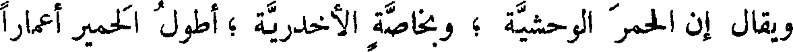
ويقال إن الحمر الوحشية ؛ وبخاصة الأخدرية ؛ أطول الحمير أعمارا
File: 000781.gt.txt (if the image is defective, simply delete all Arabic text and the line will be excluded)
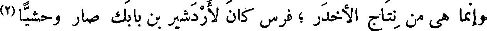
وإنما هي من نتاج الأخدر ؛ فرس كان لأردشير بن بابك صار وحشيا(2)
File: 000782.gt.txt (if the image is defective, simply delete all Arabic text and the line will be excluded)
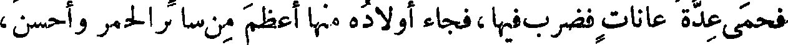
فحمى عدة عانات فضرب فيها،فجاء أولاده منها أعظم من سائر الحمر وأحسن ،
File: 000783.gt.txt (if the image is defective, simply delete all Arabic text and the line will be excluded)
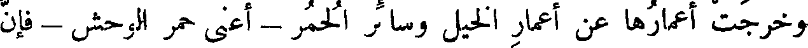
وخرجت أعمارها عن أعمار الخيل وسائر الحمر - أعني حمر الوحش - فإن
File: 000784.gt.txt (if the image is defective, simply delete all Arabic text and the line will be excluded)
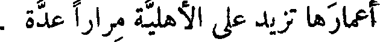
أعمارها تزيد على الأهلية مرارا عدة .
File: 000785.gt.txt (if the image is defective, simply delete all Arabic text and the line will be excluded)
( عير أبي سيارة )
File: 000786.gt.txt (if the image is defective, simply delete all Arabic text and the line will be excluded)
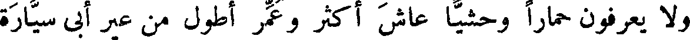
ولا يعرفون حمارا وحشيا عاش أكثر وعمر أطول من عير أبي سيارة
File: 000787.gt.txt (if the image is defective, simply delete all Arabic text and the line will be excluded)
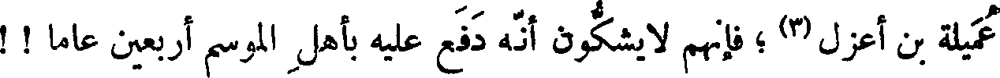
عميلة بن أعزل(3) ؛ فإنهم لا يشكون أنه دفع عليه بأهل الموسم أربعين عاما ! !
File: 000788.gt.txt (if the image is defective, simply delete all Arabic text and the line will be excluded)
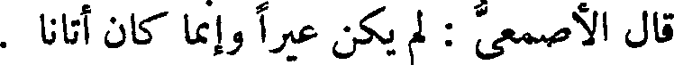
قال الأصمعي : لم يكن عيرا وإنما كان أتانا .
File: 000789.gt.txt (if the image is defective, simply delete all Arabic text and the line will be excluded)
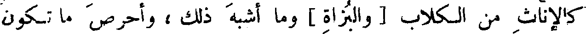
كالإناث من الكلاب [ والبزاة ] وما أشبه ذلك ، وأحرص ما تكون
File: 000790.gt.txt (if the image is defective, simply delete all Arabic text and the line will be excluded)
عند ارتضاع جرائها [ من أطبائها ] ، حتى صار ذلك منها سببا للحرص والنهم
File: 000791.gt.txt (if the image is defective, simply delete all Arabic text and the line will be excluded)
( صوت الخصى )
File: 000792.gt.txt (if the image is defective, simply delete all Arabic text and the line will be excluded)
في ذلك .
File: 000793.gt.txt (if the image is defective, simply delete all Arabic text and the line will be excluded)
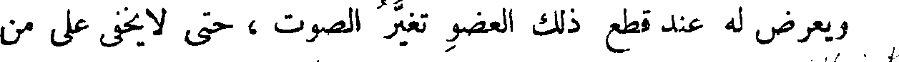
ويعرض له عند قطع ذلك العضو تغير الصوت ، حتى لا يخفى على من
File: 000794.gt.txt (if the image is defective, simply delete all Arabic text and the line will be excluded)
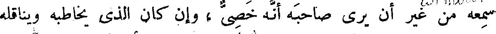
سمعه من غير أن يرى صاحبه أنه خصى ، وإن كان الذي يخاطبه ويناقله
File: 000795.gt.txt (if the image is defective, simply delete all Arabic text and the line will be excluded)
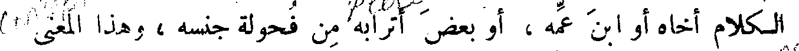
الكلام أخاه أو ابن عمه ، أو بعض أترابه من فحولة جنسه ، وهذا المعنى
File: 000796.gt.txt (if the image is defective, simply delete all Arabic text and the line will be excluded)
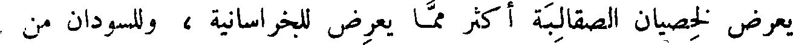
يعرض لخصيان الصقالبة أكثر مما يعرض للخراسانية ، وللسودان من
File: 000797.gt.txt (if the image is defective, simply delete all Arabic text and the line will be excluded)
File: 000798.gt.txt (if the image is defective, simply delete all Arabic text and the line will be excluded)
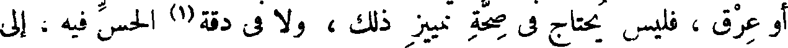
أو عرق ، فليس يحتاج فى صحة تمييز ذلك ، ولا فى دقة(1) الحس فيه ، إلى
File: 000799.gt.txt (if the image is defective, simply delete all Arabic text and the line will be excluded)
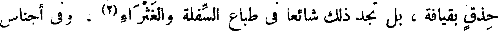
حذق بقيافة ، بل تجد ذلك شائعا فى طباع السفلة والغثراء(2) ، وفى أجناس
File: 000800.gt.txt (if the image is defective, simply delete all Arabic text and the line will be excluded)
( شعر الخصى )
File: 000801.gt.txt (if the image is defective, simply delete all Arabic text and the line will be excluded)
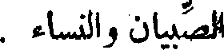
الصبيان والنساء .
File: 000802.gt.txt (if the image is defective, simply delete all Arabic text and the line will be excluded)
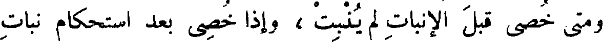
ومتى خصى قبل الإنبات لم ينبت ، وإذا خصى بعد استحكام نبات
File: 000803.gt.txt (if the image is defective, simply delete all Arabic text and the line will be excluded)
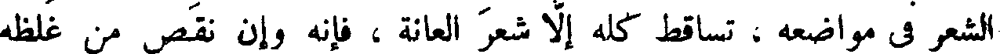
الشعر فى مواضعه ، تساقط كله إلا شعر العانة ، فإنه وإن نقص من غلظه
File: 000804.gt.txt (if the image is defective, simply delete all Arabic text and the line will be excluded)
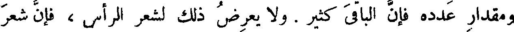
ومقدار عدده فإن الباقى كثير . ولا يعرض ذلك لشعر الرأس ، فإن شعر
File: 000805.gt.txt (if the image is defective, simply delete all Arabic text and the line will be excluded)
كتبك مفهومة كلها ، وما بالنا نفهم بعضها ولا نفهم أكثرها ، وما بالك
File: 000806.gt.txt (if the image is defective, simply delete all Arabic text and the line will be excluded)
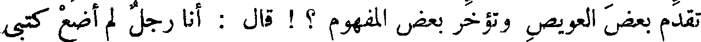
تقدم بعض العويص وتؤخر بعض المفهوم ؟ ! قال : أنا رجل لم أضع كتبى
File: 000807.gt.txt (if the image is defective, simply delete all Arabic text and the line will be excluded)
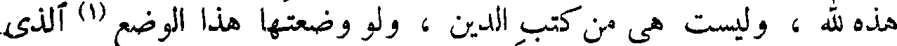
هذه لله ، وليست هي من كتب الدين ، ولو وضعتها هذا الوضع (1) الذى
File: 000808.gt.txt (if the image is defective, simply delete all Arabic text and the line will be excluded)
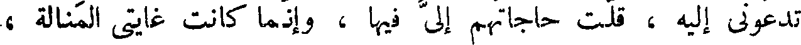
تدعونى إليه ، قلت حاجاتهم إلي فيها ، وإنما كانت غايتى المنالة ،
File: 000809.gt.txt (if the image is defective, simply delete all Arabic text and the line will be excluded)
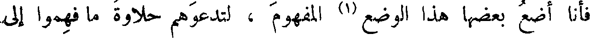
فأنا أضع بعضها هذا الوضع (1) المفهوم ، لتدعوهم حلاوة ما فهموا إلى
To Save: `Ctrl+s`, make sure to choose `Webpage, complete`!